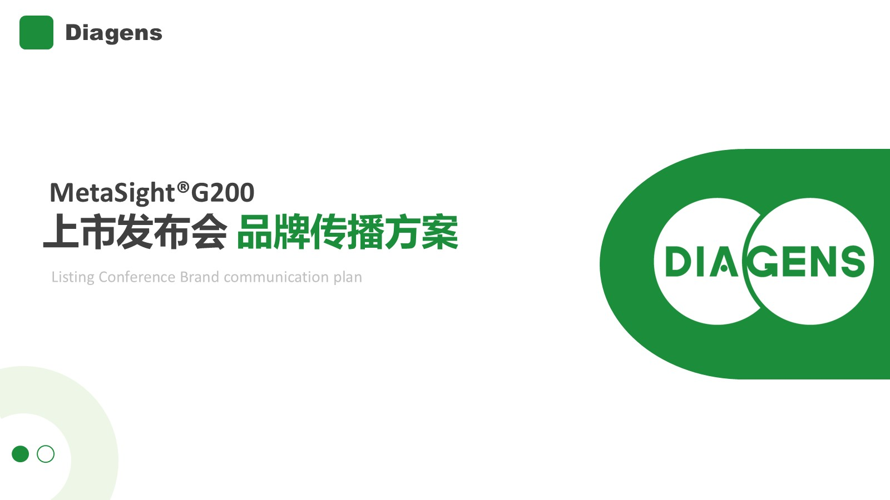
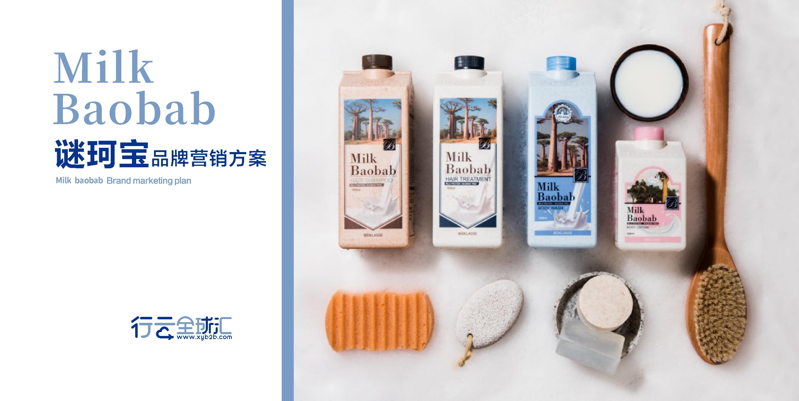
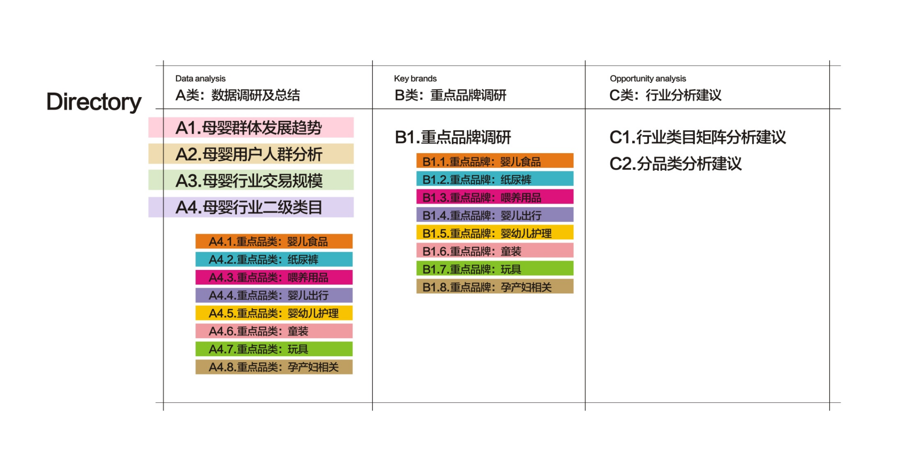
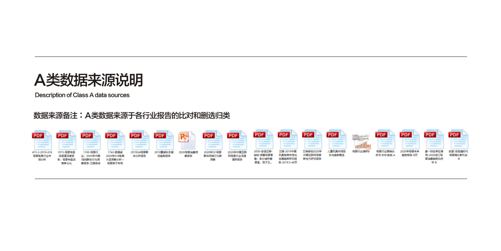
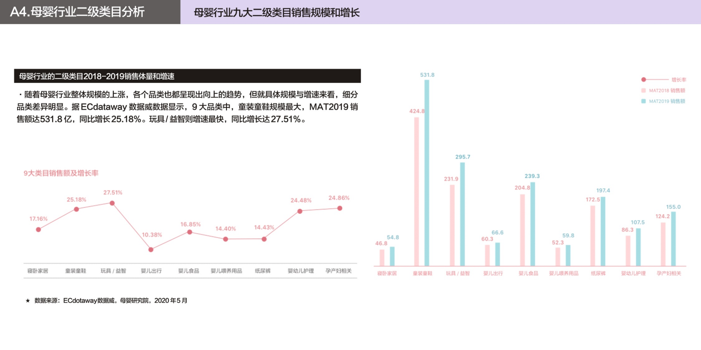
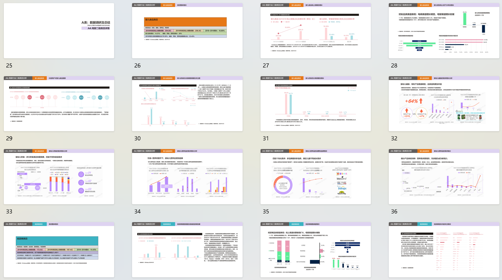
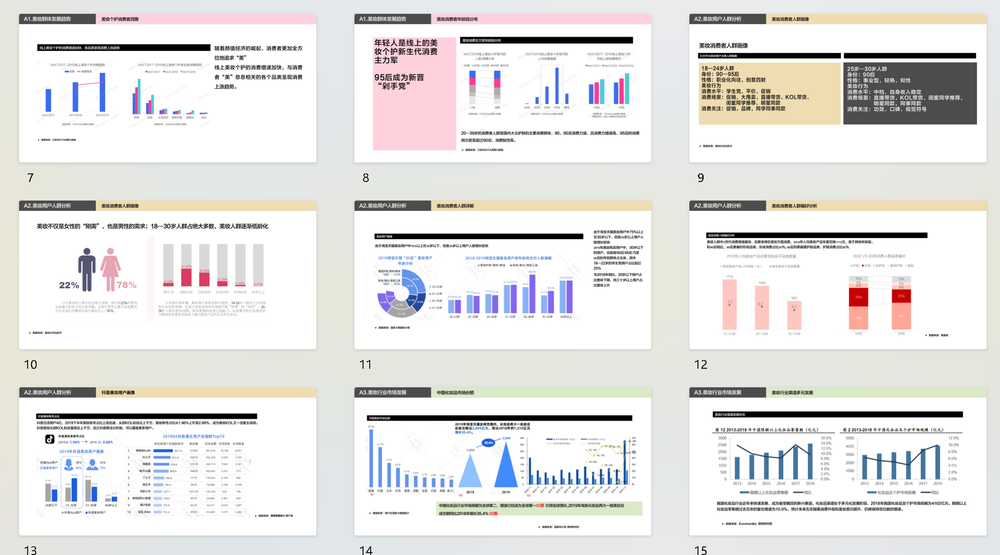
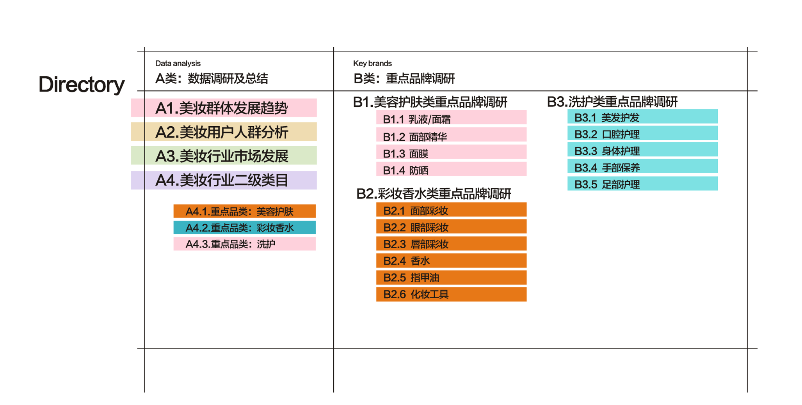

FLAGSHIP CASE / 2024.05—2025.07
G200 上市传播
从技术卖点到商机线索
主导产品从 0 到 1 的上市全案，以“全球首款搭载染色体缺陷识别 AI 模块”为核心差异点，统筹 AIGC 内容矩阵、线上媒介与线下学术推广。
我的角色 品牌定位、GTM 策略、AIGC 内容 SOP、媒介与 KOL、活动及线索转化
600万+项目整体曝光
500+有效商机线索 / 人次
我是郭璐璐 Lucy，8+ 年品牌策划与整合营销人。
深耕快消、电商与医疗 B 端，用策略连接商业，用 AI 放大创造力。
年品牌与整合营销经验
G200 上市项目曝光
G200 有效商机线索 / 人次
AI 工作流缩短内容交付周期
业绩数据来自个人简历；对应项目与统计口径见案例详情。
洞察问题，形成策略，推动落地。
每个作品都展示我的思考与实际贡献。
选题、文案、素材和复盘散落在不同工具里。我把它们收拢到一个工作台，让每条内容从捕捉到发布都有明确的下一步。
明确受众与任务
Prompt / 文案 / 图片
事实 · 语气 · 内容边界
形成下一轮反馈
杭州德适生物科技有限公司
市场部 / 品牌经理

主导产品从 0 到 1 的上市全案，以“全球首款搭载染色体缺陷识别 AI 模块”为核心差异点，统筹 AIGC 内容矩阵、线上媒介与线下学术推广。
点击封面，阅读完整方案。
行云集团 · 浙江云贸科技有限公司
品牌服务中心 / 策划经理

MARKET ENTRY / 2021从人群、竞品和产品出发，搭建品牌策略、内容矩阵与推广路径。
用小奶盒装置连接亲子场景、产品体验与社交传播，让抽象卖点成为记忆点。






我是郭璐璐，也可以叫我 Lucy。拥有 8+ 年品牌策划与整合营销经验，横跨医疗 B 端、快消、电商与新零售；习惯从真实业务问题出发，把策略拆成内容、媒介、活动、转化和复盘的具体动作。
大连工业大学 · 本科
服装设计与工程 / 辅修市场营销 · 2010.09—2014.07
统筹品牌战略、百万级预算、全域媒体矩阵及医疗新品上市全案，将 AIGC 内容工作流规模化应用于 G200 项目。
从 0→1 孵化健康生活方式内容 IP，搭建 AI 辅助生产与私域转化工作流。
负责品牌定位、年度营销策略、电商数字营销及全域内容矩阵，服务国内外消费品牌。
参与品牌 0→1 建设、CIS 系统搭建、新媒体运营及线上线下推广。
参与整合营销策略、社媒内容运营、广告项目管理、数据复盘及中英文结案报告。
求职方向：品牌策划经理 / AI 品牌营销 / 整合营销经理 / AI 内容策略